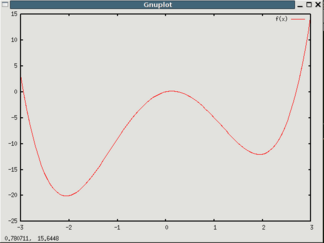

The optimization plugin can be used to perform multidimensional minimization of functions.
The plugin can use two different algorithms described in Numerical Recipes. The first is the downhill-simplex method due to Nelder and Mead, which is a slow, but failsafe method that is just walking downwards. It has the advantage of not requiring any derivatives. It's worth reading the according chapter in the recipes:-) The second method is a simulated annealing variant of that algorithm.
Optimization plugin provids a convenient interface to the algorithms. You simply have to define a function to be optimized depending on a deliberate number of parameters. E.g. if you have some least squares error function depending on two parameters that returns a scalar then optimization will find the set of parameters that minimized that scalar. Similar to the atomselect command it returns and object through which you can configure and control the optimization. For each call a different unique namespace (+accessory procedures) is generated so the you can maintain several optimization projects at the same time.
I have extended the algorithm so that you can define lower and upper bounds for the parameter search. Thus you can prevent the optimizer to try using values that won't make sense.
Further you have the possibility to analyze the optimization. After the optimization completed (either by convergence or by max. iterations) you can request lists for the fitting parameters and the error function during the opt run or even plot these using multiplot.
It is written completely in TCL but if the function to be optimized is some complicated thing written in C and wrapped in TCL you can to even expensive computations very fast. Thats because the optimization itself is actually mere bookkeeping and feeding the function with new parameters.
proc parabel2 {xy} {set x [lindex $xy 0]; set y [lindex $xy 1]; return [expr pow($x-1,2)+pow($y-3,2)]}
Now we can set up an optimization problem. The return value is a unique handler used to
control the optimization. Thus you can manage multiple problems at the same time.
set opt [optimization -downhill -tol 0.01 -function parabel2]The simplex must consist of ndim+1 vertices, while ndim is the number of independent variables of your function. The initsimplex command can be used to automatically construct a simplex around a start value.
$opt initsimplex {2 1}
> {{2 1} {2.02 1} {2 1.01}} {5.0 5.0404 4.9601}
Now we can start the optimization. The resulting optimal parameters and their corresponding function value
are returned.
set result [$opt start]The results can also be returned any time later using the following syntax:
set result [$opt result]We can plot how the variables and function values developed during the optimization:
$opt analyzeNow we set the tolerance to a lower value and start from the current vertex again:
$opt configure -tol 0.000001 $opt startWhen we are done we can delete all the data
$opt quit
If -miny is specified the optimization finishes, if the function value gets below this boundary. Useful for optimizin error functions.
set opt [optimization -simplex {{2 1} {4 1} {2 5}} -miny 0.1 -function parabel2]
$opt start
$opt quit
Let's try it again but with parameter boundaries defined, i.e. the optimizer can vary the values only within the given range. Here the first parameter may vary between 0 and 10 the second one between -1 and 5.
set opt [optimization -downhill -tol 0.01 -function parabel2]
$opt configure -bounds {{0 10} {-1 5}}
$opt initsimplex {2 1}
$opt start
$opt analyze
$opt quit

The next example is a 1D double well potential.
The function f(x) = 2*x - 8*(x)**2 + (x)**4 has two minima and the starting point x=3.0 is on the
slope to the higher minimum. Thus the downhill simplex will only find the local minimum,
whereas simulated annealing can find the global optimum.
proc doublewell {x} { return [expr 2.0*$x - 8*pow($x,2) + pow($x,4)] }
set opt [optimization -annealing -tol 0.001 -function doublewell]
$opt initsimplex 3.0
$opt start
Now we reinitialize the simplex (starting at x=3.0 again) and try simulated annealing:
$opt initsimplex 3.0 set [opt optimization -annealing -tol 0.0001 -T 25 -iter 20 -Tsteps 15 -function doublewell] $opt start $opt quitDepending on the values for the initial temperature
T, the number of iterations per
cycle iter and the number of temperature cycles Tsteps the optimizer sould find the global
minimum.